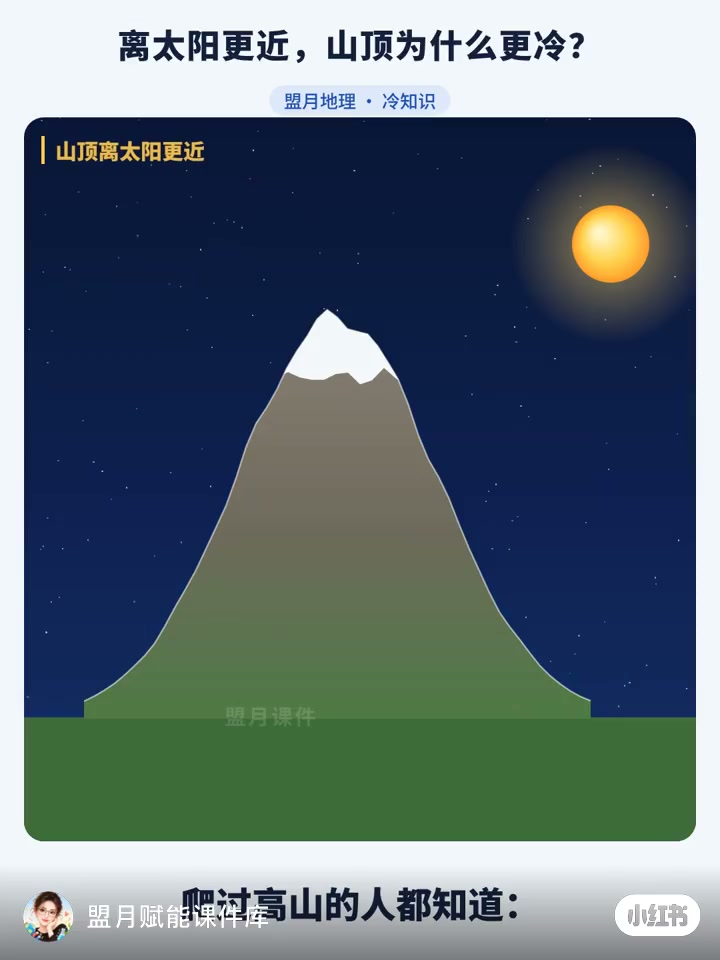
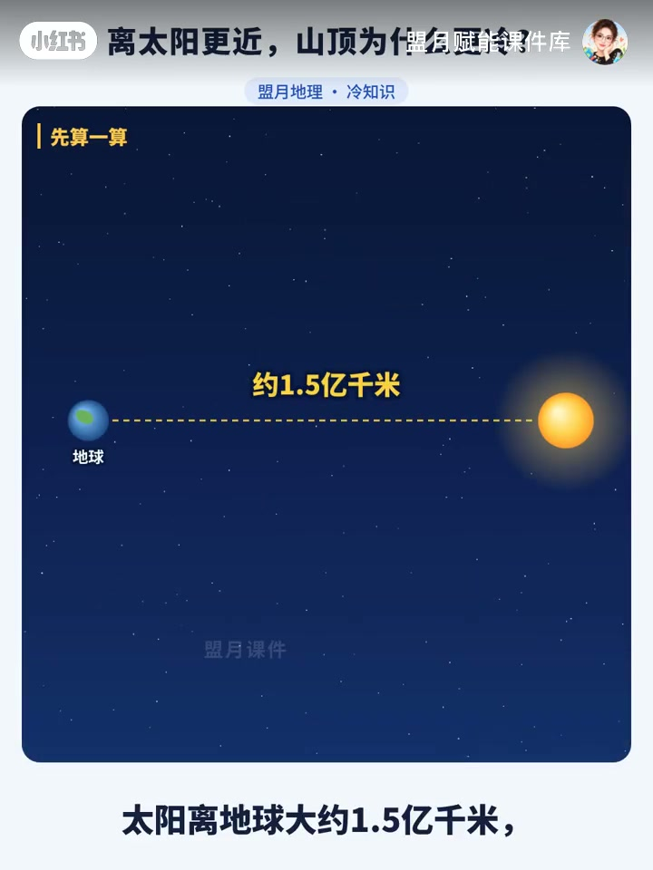
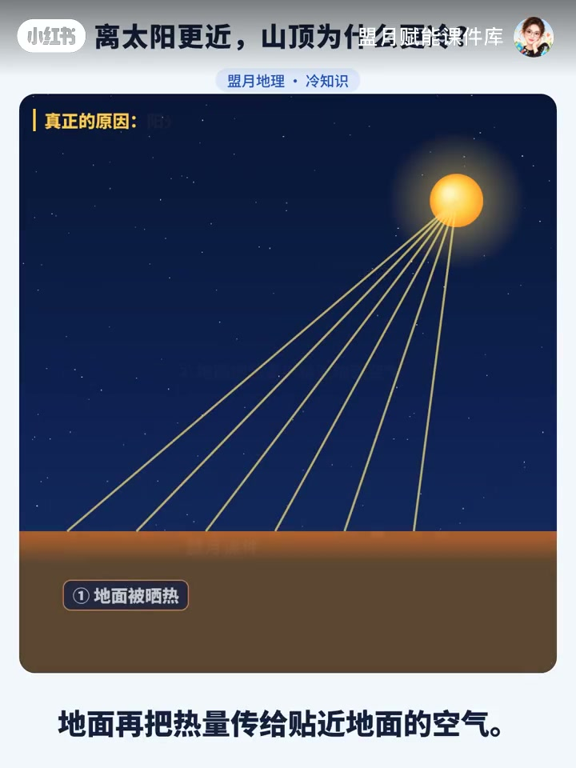
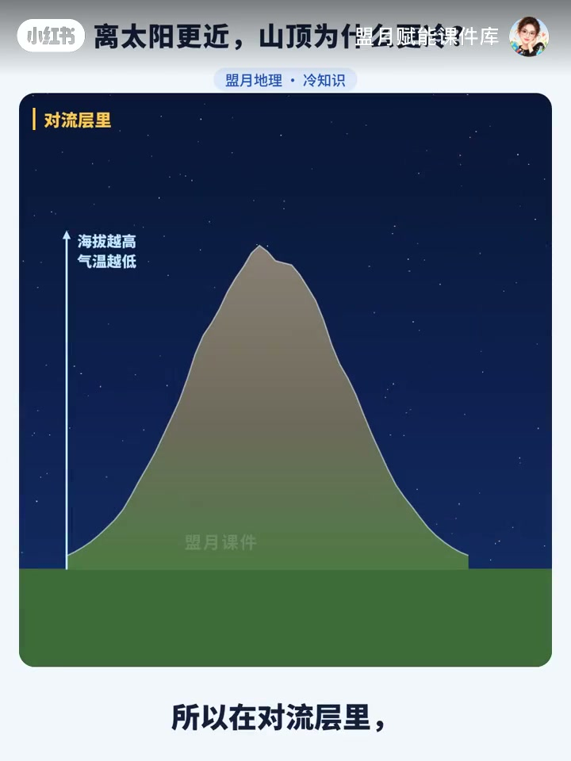
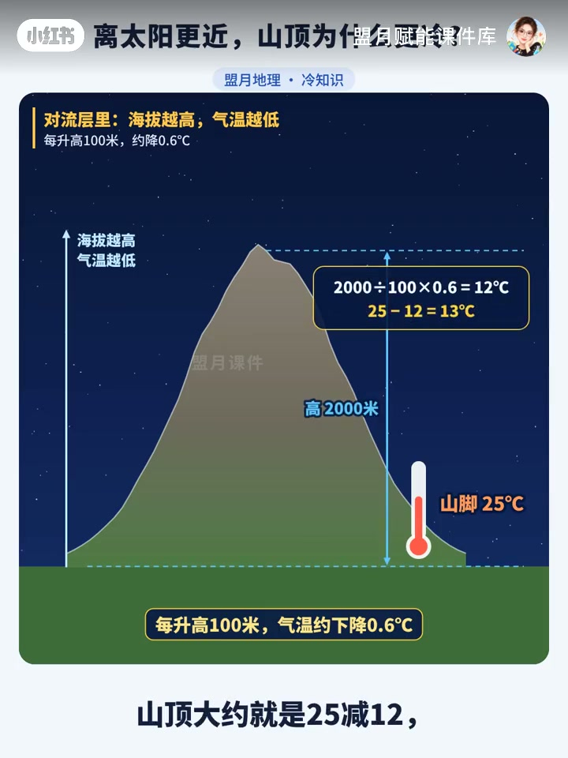

内容要点
「盟月赋能课件库」用约 57 秒回答学生常卡的初中地理问题：山顶离太阳更近，为什么反而更冷？视频先用日地距离把「更近一点」抹掉，再讲阳光→地面→近地面空气的加热链，最后落到对流层递减率与一道 2000 米例题。
知识结构
山脚可穿短袖，山顶却要穿棉衣；直觉以为离太阳近该更热，视频把这个矛盾先摆上台面。
太阳离地球约 1.5 亿千米；一座几千米的山「近那么一点点」几乎可以忽略，冷不冷与这点远近无关。
阳光先晒热地面，地面再把热量传给贴近地面的空气；离地面越远，得到的热量越少，高处空气稀薄也存不住热。
对流层里一般海拔越高气温越低，约每升高 100 米降 0.6℃；山脚 25℃、高出 2000 米 → 约降 12℃ → 山顶约 13℃。
山顶冷，不是因为「离太阳近一点没用」，而是因为近地面空气主要被地面烤热；对流层里高度上去，热量来源变弱，气温随之下降。
00:00-00:11开场：离太阳更近，为什么更冷？
画面用雪山示意「山顶离太阳更近」，口播立刻接上日常经验：爬过高山的人都知道，山脚还穿短袖，到了山顶可能就要穿棉衣。可奇怪的是——山顶离太阳更近一点，为什么反而更冷？整支视频的驱动力就是拆开这个直觉陷阱。

00:11-00:24先算一算：日地距离把「更近」抹掉
课件切到「先算一算」：太阳离地球大约 1.5 亿千米。一座几千米高的山，离太阳近的那一点点几乎可以忽略不计。因此，冷不冷和离太阳远近没有什么关系——至少不是学生以为的那种「近一点就该更热」。

00:24-00:39真正原因：地面烤热近地面空气
真正的原因被写成两步：① 阳光先把地面晒热；② 地面再把热量传给贴近地面的空气。也就是说，近地面空气主要是被地面烤热的。离地面越远，得到的热量就越少；而且高处空气稀薄，也存不住热量。加热源在「脚下的地面」，不在「头顶多靠近太阳那几米」。

00:39-00:57对流层规律与 2000 米例题
落到对流层：一般是海拔越高，气温越低，大约每升高 100 米，气温下降 0.6℃。例题很直接——一座山，山脚气温 25℃，山顶比山脚高出 2000 米：2000÷100×0.6=12℃，25−12≈13℃，山顶大约就是 13℃左右。结尾「谢谢观看」，把递减率计算题的数字来源钉死在「地面加热 + 对流层高度」这条链上。


详细文字转录
以下内容按 Whisper 原始分段完整呈现，可能包含识别误差。
爬过高山的人都知道
山脚还穿短袖
到了山顶可能就要穿棉衣了
可奇怪的是
山顶离太阳更近一点
为什么反而更冷
先算一算
太阳离地球大约1.5亿千米
一座几千米高的山
离太阳近的这一点点
几乎可以忽略不计
所以冷不冷
和离太阳远近没什么关系
真正的原因是
阳光先把地面晒热
地面再把热量
传给贴近地面的空气
也就是说
近地面的空气
主要是被地面烤热的
离地面越远
得到的热量就越少
而且高处空气稀薄
也存不住热量
所以在对流层里
一般是海拔越高
气温越低
大约每升高100米
气温下降0.6摄氏度
比如一座山
山脚气温25摄氏度
山顶比山脚高出2000米
山顶大约就是25-12
只有13摄氏度左右
谢谢观看